Booth Id: TMED039, Category: Translational Medical Science
The long-term goal is to develop an automated, real time, in situ red blood cell (RBC) identification, counting, and RBC size distribution width (RDW) calculating system using deep learning (DL) for the prediction of mortality in people with various medical conditions. The aim of this work was to develop a deep learning model that identifies and counts RBCs and white blood cells (WBCs) and calculates RDW in images and videos. 869 images of single cells, 230 images containing multiple cells, and 4 videos were annotated using Microsoft’s VOTT and LabelImg and used to train the DL model. The Darkflow public repository was cloned, run using a virtual environment, trained on 90% of the images using pre-trained YOLO weights, and programmed to create a bounding box around each cell to signify RBC or WBC. This model was used to test the remaining 10% of the images to determine its accuracy, calculate RDWs for images and videos of healthy blood, and calculate RDW for sickle cell anemic blood. This model identified 99% ± 5% of the RBCs and 74% ± 40% of the WBCs, and 95% ± 4% had bounding boxes that accurately bounded the RBCs. In videos, this model virtually identified all of the RBCs and WBCs correctly and tracked their movements. Finally, this model successfully distinguished between the RDWs of healthy and sickle cell anemic blood (22.4% ± 10.4% vs. 37.4% ± 10.5%, respectively; p = 9.39 x 10-5). This model shows tremendous potential for clinical use.


 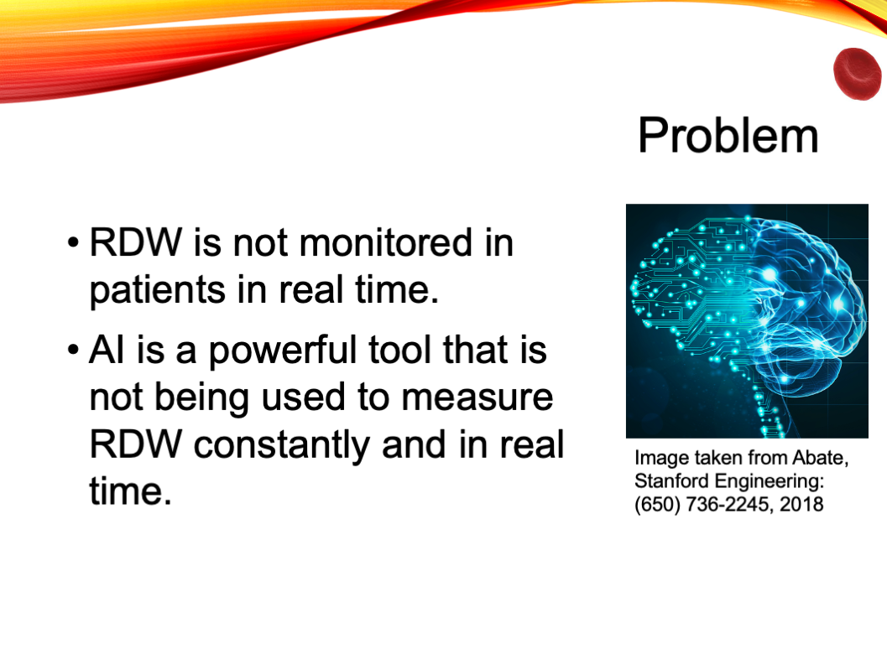
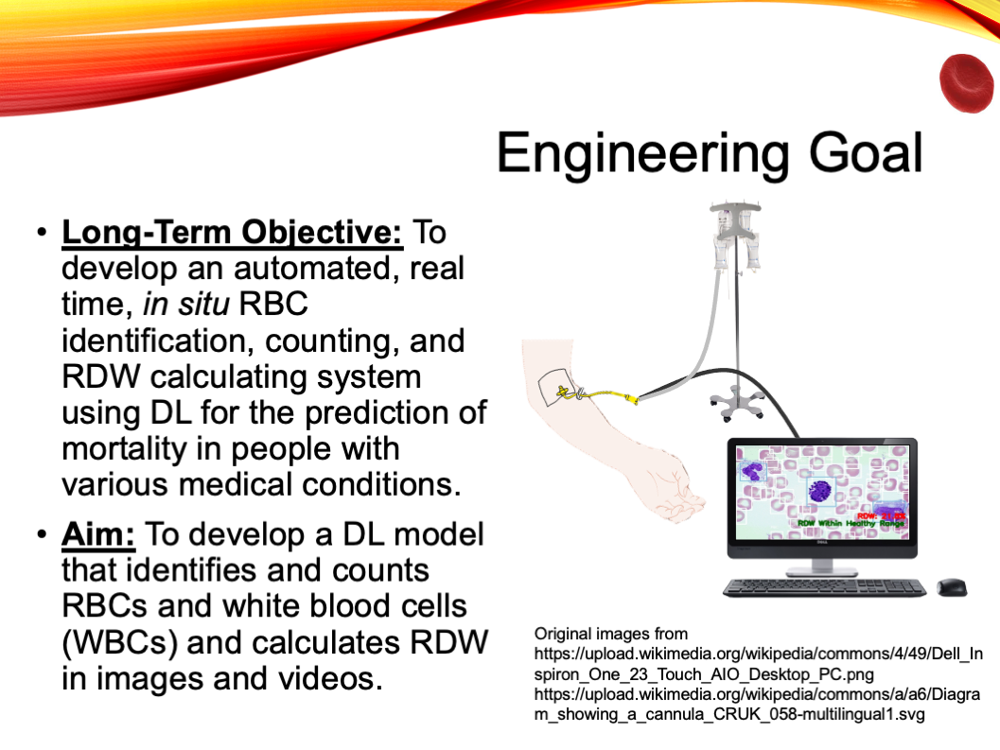
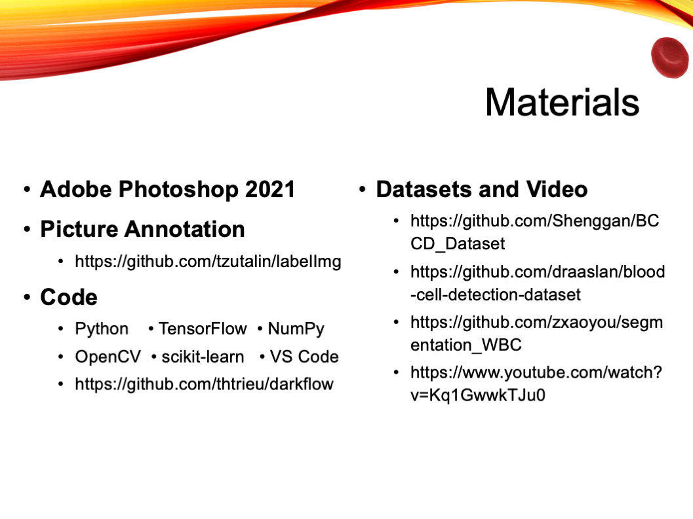
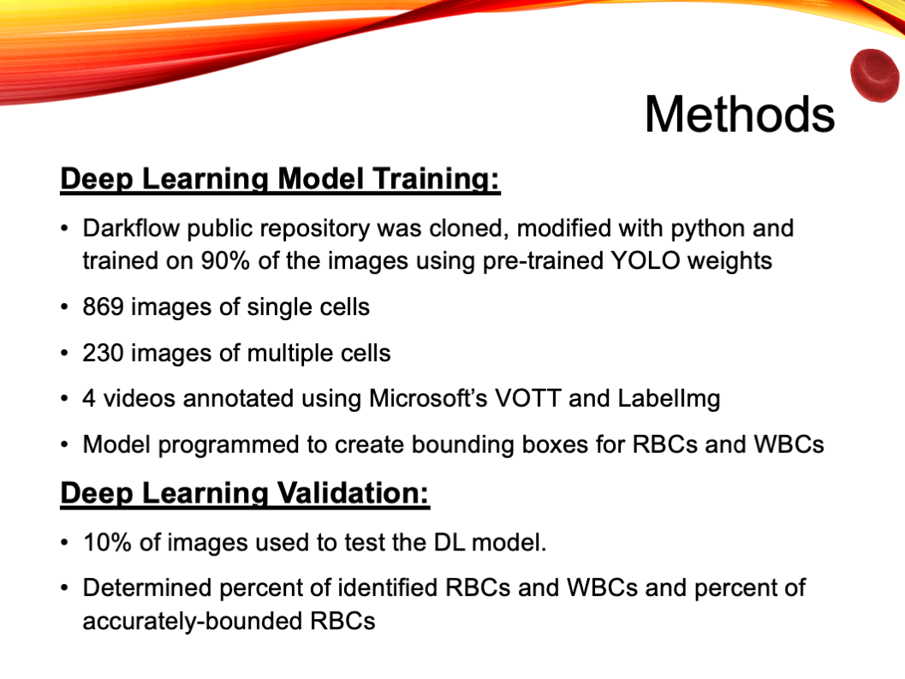
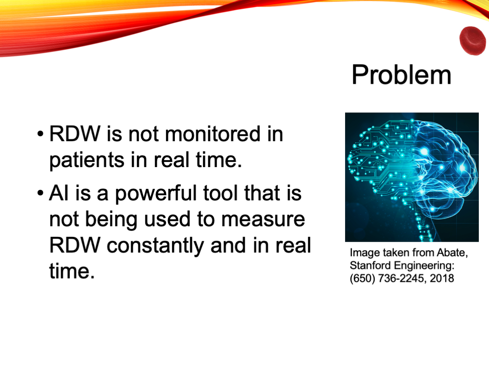
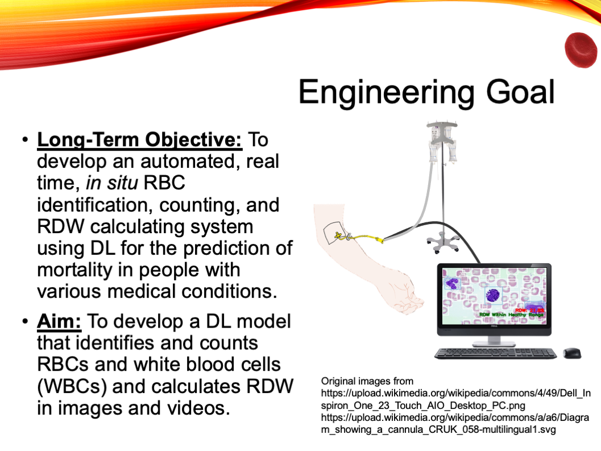
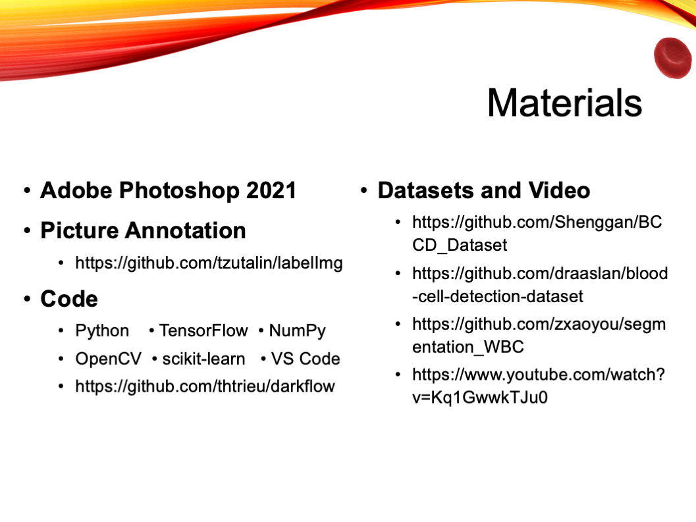
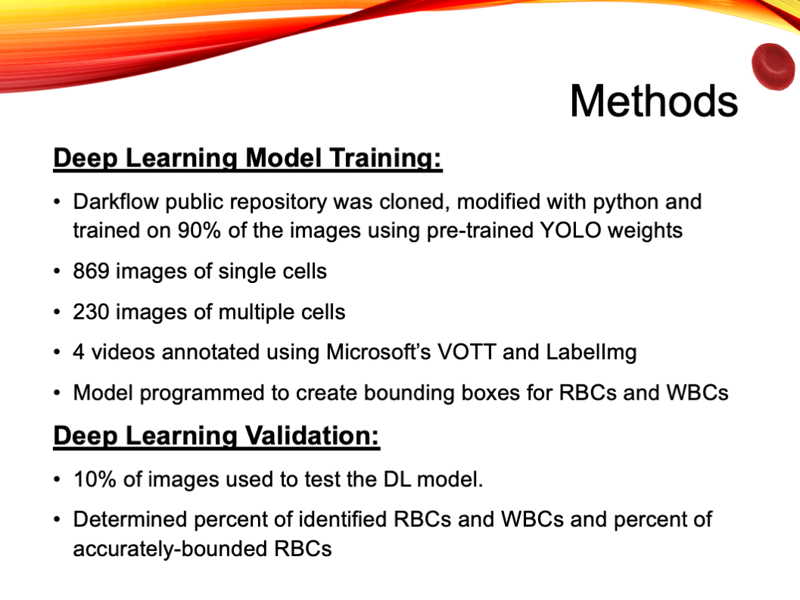
 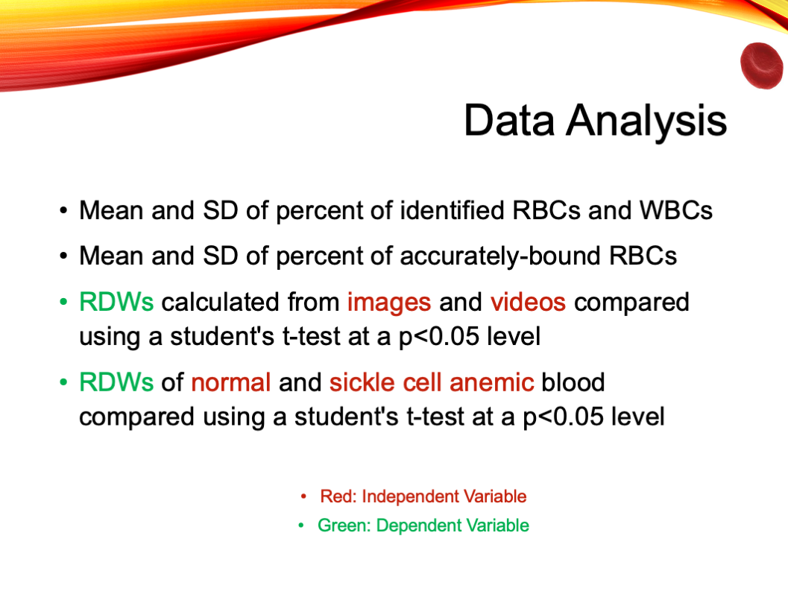
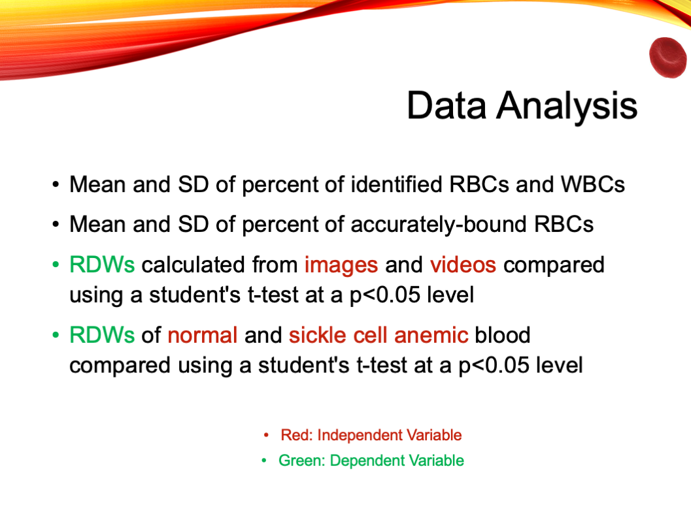
 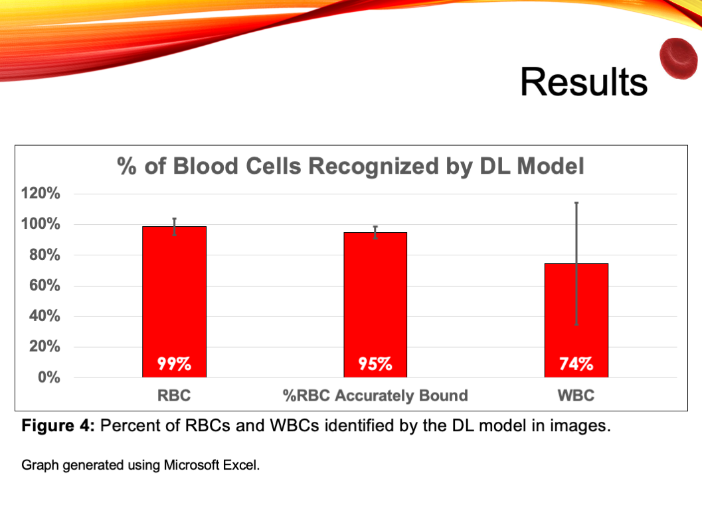
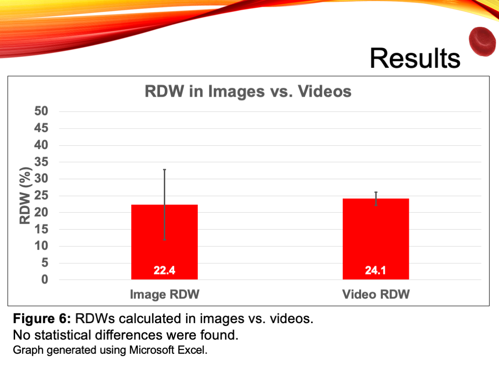
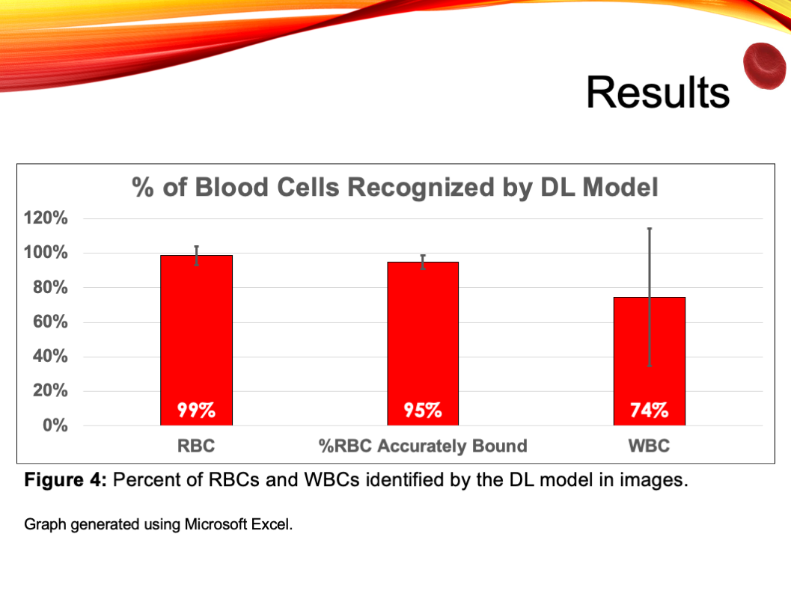
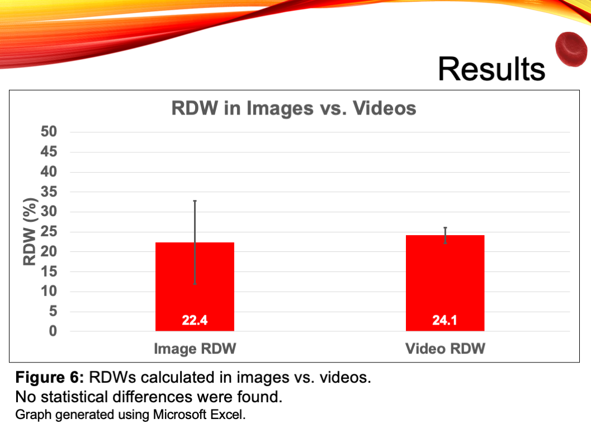